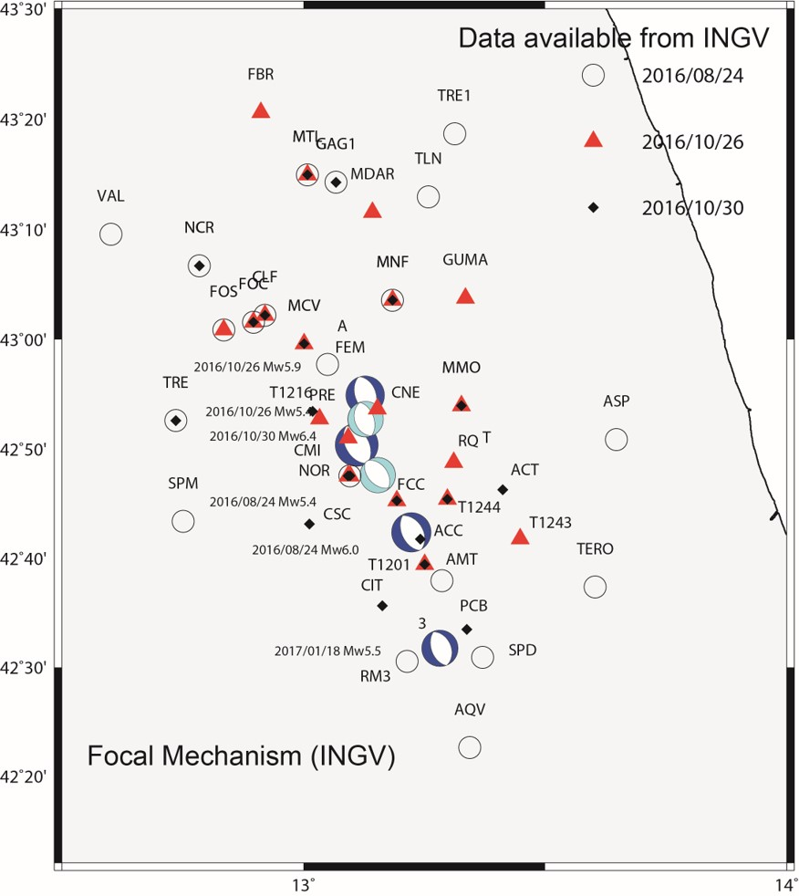
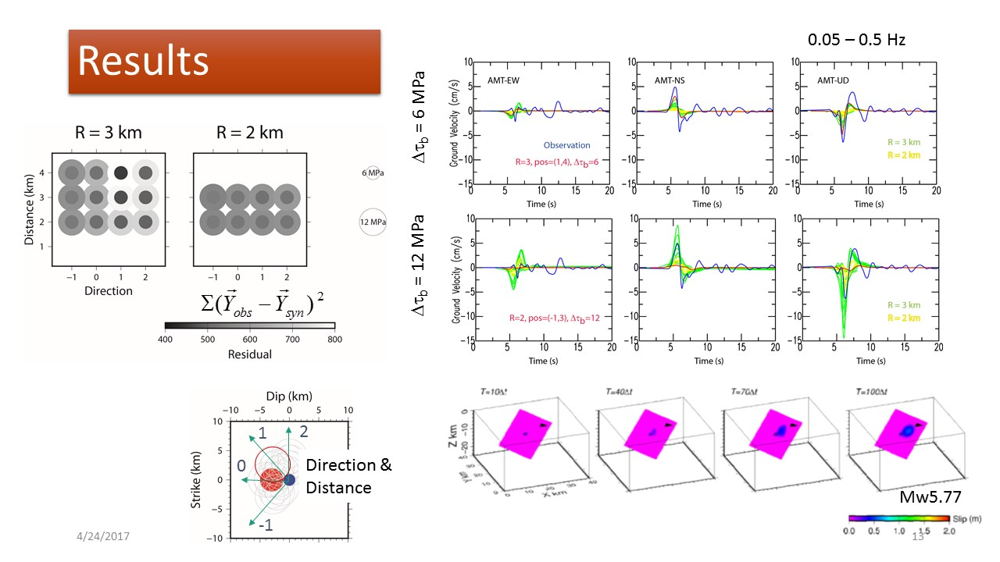

2016 Central Italy Earthquake Sequences
A few M6 earthquakes have occurred in the Apennines mountain, Central Italy, since the 24th August 2016. It is known that the area is subject to high seismic potential, as the 2009 L'Aquila earthquake nearby. It is important to understand their mechanism and near-field ground motions.
Points
- Identiciation of asperities (strong motion generation area: SMGA) from nearfield data.
- Possibility of rupture transfer among segmented elements to understand the sequence.
- Dynamics of normal faulting comparing to reverse faulting.
R&D in pregress
- Application of a new Boundary-Domain method (Hybrid Boundary Integral Equation Method in semi-infinite medium). Presented in EGU 2017.
- SMGA of the Mw 6.0 24th August 2016 leading to strong pulse toward Amatrice. Presented in EGU 2017.
References
- Aochi, H., Asperity imaging of the ML6.0 2016 Amatrice, Italy, earthquake from dynamic rupture simulation, IASPEI, July-August 2017.
- Aochi, H., Dynamic modeling of normal faults of the 2016 Central Italy earthquake sequence, EGU General Assembly, April 2017.
Created on the 26th June 2017. All rights reserved.
Back to Research/Projects page.
Back to Top.